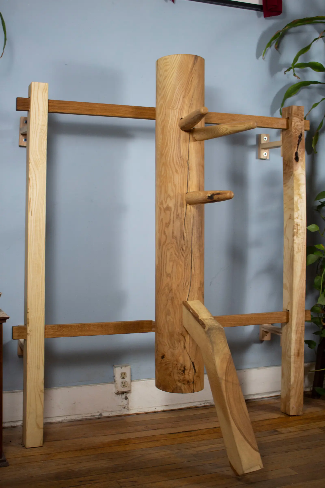
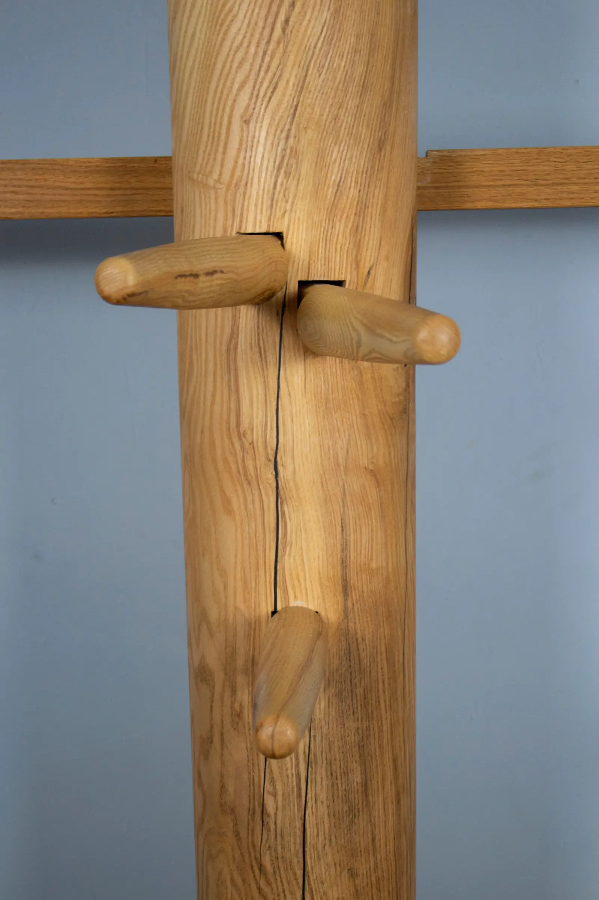
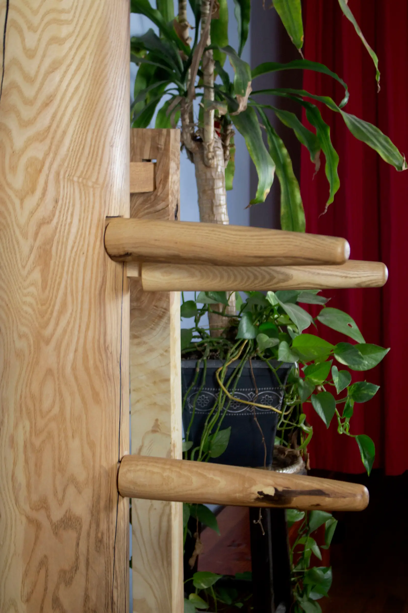
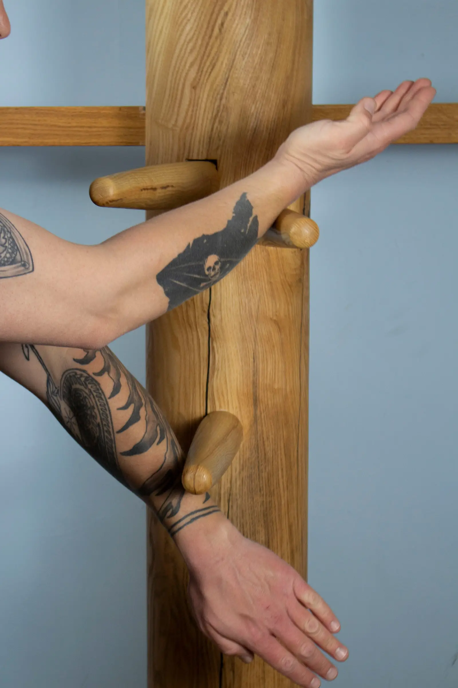
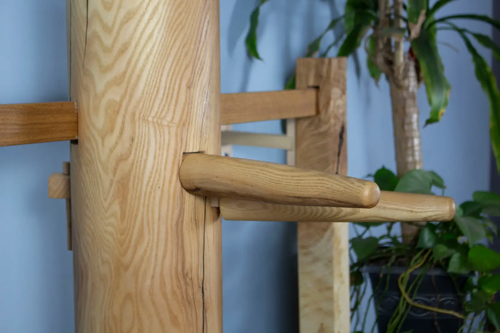
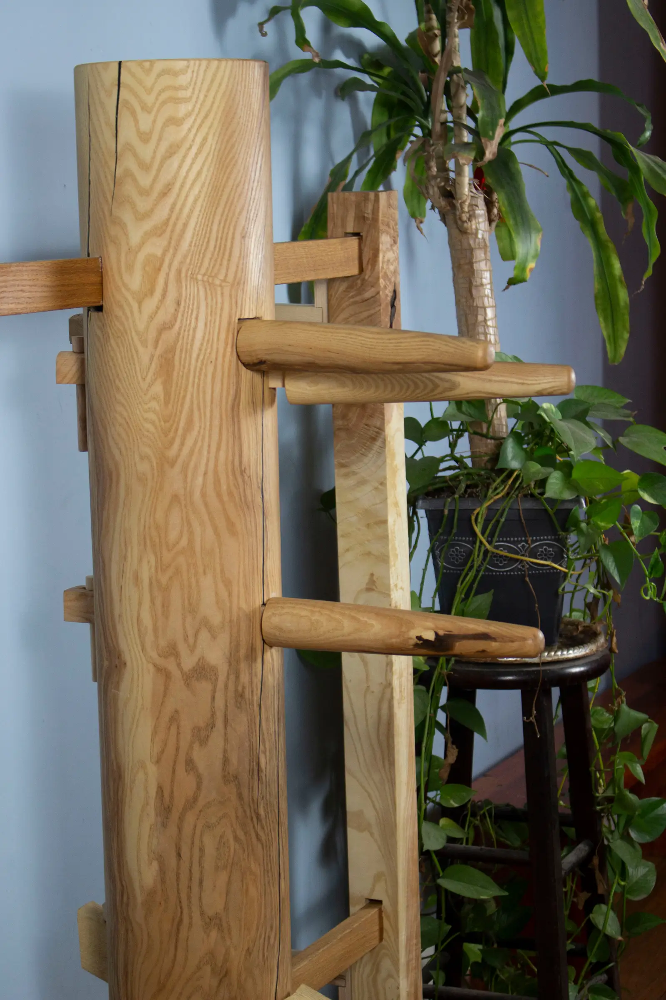

Handcrafted Ving Tsun wooden dummies, built one at a time from solid, locally sourced American hardwood right here in Denver.



The Muk Yan Jong — "wooden man post," or plum-blossom dummy — is a cornerstone of Ving Tsun Kung Fu, trained against for centuries.
A vertical hardwood post with two upper arms, one lower arm, and a leg, the jong represents a fixed opponent. It doesn't yield, doesn't fatigue, and doesn't flinch — the perfect partner for developing the honest, structural power that Ving Tsun demands.
Every strike reveals your structure; every drill builds knowledge that live training alone cannot. A jong in your home is a lifelong companion in your kung fu.


Each jong is created with the knowledge and training of a lineage that stretches back generations — shaped not just to look the part, but to train the art.
Made to order, one at a time, with care and precision. No jong is rushed, and none leaves until it is right.
Each jong is made from ash, sourced locally from Denver-area arborists, and finished by hand with tung oil. Custom framing is available and comes in oak.

Every jong carries an unbroken chain of knowledge — from the founding masters of Ving Tsun through Grandmasters Yip Man and Moy Yat, and our current Grandmaster Moy Tung. Each jong is built within that tradition.
See the Full Lineage at Denver Kung Fu →Reach out with any questions or to place an order.